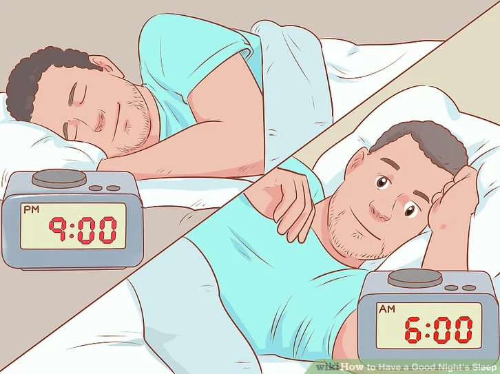

Method One: Establish a Sleep Schedule
Go to bed and wake up at the same time each day.
Change your sleeping habits so that each day is the same -- even on weekends. The best way to do this is to figure out what time you need to be up for work or school, then calculate backwards to ensure that you'll get enough hours of sleep. This will give you your bedtime and wake-up time- For example, you may need to get up at 6:00 a.m. to be at work by 8:00 a.m. To get 7-9 hours of sleep, you'd need to set your bedtime sometime between 9:00 p.m. and 11:00 p.m.
- If you need to get used to going to bed earlier, it's best to do so in 15-30 minute intervals. Let your body get used to the earlier bedtime before you set it another 15-30 minutes earlier
- This trains your brain to know when to go to sleep so that you don't lie in bed tossing and turning.
Avoid catching up on sleep over the weekend.
This wrecks your sleep schedule, making it harder to get the good sleep you need. Do your best to stick to the same sleep schedule during the weekend as you need during your work week. Over time, this will have you feeling well-rested.- At first, you may want to schedule early morning activities on your weekend days so that you have an incentive to rise early. For example, make a plan with a friend or partner to go on an early morning hike.
- Don't plan any late-night events on Friday or Saturday while you're trying to establish your sleep schedule. After you establish your sleep schedule, you can occasionally sleep in for 1-2 hours without disturbing your sleep schedule.
- It can take weeks to establish your sleep schedule, depending on your current sleep and wake cycle. Plan to adjust your bedtime by just 15-30 minutes at a time.

Make sure you're getting enough hours of sleep.
Sleep hours can vary depending on your age. Most adults need 7-9 hours of sleep each night, while teenagers require 8-11 hours each night. Children should get 10-13 hours of sleep each night.- Young children also require naps. For example, a 2-year-old should nap for 1-2 hours, while a 1-year-old should nap for up to 4 hours, spread throughout the day.

Keep naps short and to a minimum.
Naps can disrupt your sleep schedule, making it hard to fall asleep at night. Stay awake during daylight. If you do nap, stick to 15-30 minute power naps. Otherwise, you may wake up from your nap more tired than before, and you'll risk messing up your sleep schedule.- You should only take 1 power nap per day.
- The best time of day for a nap is in the afternoon, or about 2 hours after lunch. If you have a typical schedule, this means about 2:00-3:00 p.m. Napping later in the evening can interfere with your sleep schedule.

Get active after dinner.
It's normal to feel a little tired after dinner, and you may feel like resting on the couch in front of the TV. However, it's best to get moving instead to re-energize yourself. That's because resting can result in an energy surge later in the evening when you need to be winding down for bed.- Go for a short after-dinner walk. You might even have a friend or pet join you.
- Sunset is a great time to go for a walk! It can decrease stress and help keep your body's circadian rhythms in sync.

Don't agonize over sleep if you're tossing and turning.
Although sticking to your schedule is important, you can't force yourself to fall asleep. Instead of tossing and turning, get out of bed and do something relaxing, such as reading. When you start to feel tired, try to sleep- Although it's a good idea to occupy your mind, don't choose an activity that can make you feel more awake, such as playing on your phone, watching TV, or using your computer.
Method Two: Creating a Good Sleep Enviroment

Keep your room clean.
If your room is not clean it actually isn't too easy to sleep in. Since everyone feels satisfaction out of a clean room, don't you want to go to bed satisfied and relaxed?
Make your bed comfortable.
A comfortable bed can help you get to sleep faster. Invest in some good pillows, a good comforter, and comfortable sheets. If your mattress is old, then you might consider replacing it.- A good comforter is one that's comfortable for you. Everyone has different preferences.
- You may want to change your bedding with the seasons. For example, during winter, you may switch to cotton or jersey sheets, and add an extra blanket. You could also keep warm with a down blanket.
- During summer, you might choose lighter weight options like cotton with a thread count between 250-500 or linen. Switch out the down comforter for a light-weight cotton alternative.
- If a dog, child, or partner is hogging the bed, make them move. You deserve your space.

Make sure your room is completely dark.
Light can trick your brain into staying awake. Turn off the lights and avoid using a nightlight. Block out light from outside with heavy blinds or curtains. If you use an alarm clock, turn it around so that it doesn't face you.- Don't sleep with the television on, as the flickering light will disrupt your sleep.
- If you get up during the night, keep the lights dim.

Block out noise.
Excessive noise can make it hard to go to sleep. Additionally, sudden or changing noises can wake you up. The best way to deal with noise is to use a white-noise machine, fan, or portable air purifier to create a consistent noise environment that is appropriate for sleeping.- You can invest in a white noise machine that offers different types of sounds that encourage sleep. However, a fan or a portable air purifier is often cheaper.
- You could also wear ear plugs.

Adjust the thermostat to a cool temperature.
Keeping your bedroom cool helps you fall asleep more easily, as your body naturally cools down before sleep. How cool the room should be can vary depending on the individual, so choose a temperature that feels cool to you.- Generally speaking, you'll be able to sleep best somewhere between 60 and 68 °F (16 and 20 °C).